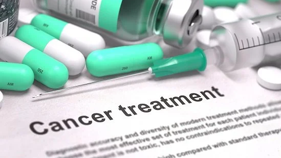

Medicina
Modurile in care sunt folosite
radiatiile in medicina si bolile
cauzate de acestea
Radiatiile se regasesc in multe surse din jurul nostru, insa acestea sunt de cele mai multe ori in doze mici, cu expunere graduala. Radiatiile in doze mari au fost mai intens studiate si asociate cu riscul crescut de cancer, fiind observate prevalente specifice pentru anumite tipuri de cancer, la diverse categorii de pacienti. Radioterapia si testele imagistice pot creste riscul de cancer doar in anumite cazuri, iar beneficiile acestora depasesc semnificativ acest risc.
Razele X si Gamma sunt cele mai cunoscute radiatii cu efect potential carcinogen (cauzator de cancer). Studiile ce analizeaza legatura dintre expunerea la aceste radiatii si aparitia cancerului au adunat informatii din diverse surse: supravietuitori din Japonia, persoane expuse la radiatii in timpul accidentului nuclear de la Chernobyl, pacienti tratati cu doze mari de radioterapie pentru cancer si alte afectiuni si persoane expuse la radiatii la locul de munca.
Majoritatea studiilor au ales sa investigheze persoane expuse la doze mari de radiatii, intrucat este mult mai dificil de evaluat riscul de cancer in urma expunerii la radiatii in doza mica.Majoritatea studiilor nu au reusit sa identifice o legatura intre expunerea la radiatii in doze mici si cancer. De exemplu, persoanele ce locuiesc la altitudini inalte sunt expuse mai mult la radiatii naturale decat persoanele ce locuiesc in zone joase, insa acestea nu au rate de cancer mai mari.
Cu toate astea, cercetatorii si industriile din domeniu sunt de acord ca orice doza de radiatii X sau Gamma poate creste riscul de cancer, chiar si cu procente foarte mici. Cu cat este mai mica doza de expunere, cu atat este mai mic riscul de cancer, insa acesta exista in continuare.
Tipuri de cancer
- Majoritatea tipurilor de leucemie
- Mielom multiplu
- Cancer vezical
- Cancer de san
- Cancer ovarian
- Cancer de colon (nu si de rect)
- Cancer hepatic
- Cancer esofagian
- Cancer gastric
- Cancer de piele
- Cancer tiroidian
Pentru majoritatea cancerelor, riscul este mai mare pentru pacientii expusi la radiatii la varsta copilariei. Acestea au aparut dupa multi ani de la expunere, unele tipuri mai agresive aparand mai repede. In timp ce tumorile solide au nevoie de perioade mai indelungate de formare, de pana la 20 de ani de la expunere, leucemia poate fi diagnosticata la 2-3 ani de la expunere.
Copiii si adolescentii care locuiau aproape de Chernobyl in momentul accidentului au avut risc crescut de cancer tiroidian, din cauza expunerii la iod radioactiv. Incidenta crescuta a acestui cancer nu a fost insa observata la adultii ce locuiau in acea zona
Radioterapia este folosita astazi in principal ca metoda de tratament in cancer. In unele cazuri insa, pacientii ce trec prin radioterapie pentru un tip de cancer, vor avea sanse mari sa dezvolte ulterior un alt tip, precum leucemia, cancer tiroidian si cancer de san. Riscul depinde de mai multi factori precum doza radiatiei, regiunea de corp in care se realizeaza radioterapia, varsta pacientului si asocierea chimioterapiei sau a altor tratamente.
Este bine cunoscut faptul ca unele teste imagistice utilizate frecvent in medicina, pentru a stabili diagnostice, lucreaza cu radiatii. Acestea includ radiografiile si examinarile CT, dar si altele. Studiile au estimat ca riscul de iradiere si aparitie a cancerului in urma acestor teste imagistice este de 1 sansa la 2000 de pacienti. Legatura dintre teste imagistice iradiante si cancer este inca dificil de demonstrat cu exactitate, motiv pentru care studiile sunt inca in desfasurare.
Boala de iradiere
Una din cele mai rele boli produse de radiatii este boala de iradiere ce apare în momentul în care corpul uman este expus unei doze foarte mari de radiații într-o perioadă de timp foarte scurtă (expunere acută). Cantitatea de radiații absorbită sistemic, numită și doza absorbită este direct proporțională cu gravitatea simptomelor.
Aceasta mai este denumită și sindrom acut ca urmare a expunerii la radiații sau otrăvirea cu radiații. Expunerile uzuale la doze mici de radiații precum efectuarea de rutină a unei radiografii sau a unei tomografii nu cauzează niciodată boală de iradiere.
Boala de iradiere este este foarte gravă și de cele mai multe ori fatală. Cele mai grave accidente din istorie datorate radiațiilor s-au produs după lansarea bombei atomice în Japonia la Hiroshima și Nagasaki în timpul celui de-al Doilea Război Mondial și la Cernobâl în 1986. În general, expunerea acută la radiații apare în urma accidentelor nucleare, cel mai recent fiind explozia centralei nucleare de pe coasta de est a Japoniei în urma cutremurului de mare amplitudine din 2011.
Semnele și simptomele bolii de iradiere apar în general în momentul în care întregul corp primește o doză absorbită cel puțin egală sau mai mare de 1 Gy. Dozele mai mari de 6 Gy aplicate la nivelul întregii suprafețe corporale determină o afectare gravă, neresponsivă la tratament, decesul survenind într-o perioadă cuprinsă între două zile și doă săptămâni de la expunerea inițială, rapididatea cu care se produce decesul depinzând de doza de radiații absorbită și de durata expunerii.
Simptomele ce urmează expunerii la radiații au fost clasificate conform manualului Merck în două categorii: simptome precoce și simptome tardive.
Simptomele precoce sunt:
- greața și vărsăturile
- diareea
- cefaleea
- febra
Simptomele tardive:
- amețeala și dezorientarea
- oboseala și alterarea stării generale
- alopecia
- infecțiile
Decontaminarea reprezintă înlăturarea a cât mai multe particule radioactive externe posibile. Hainele și încălțămintea pacientului sunt cele mai contaminate, iar înlăturarea lor elimină aproximativ 90% din contaminarea radioactivă externă. Decontaminarea pielii se face prin spălarea pacientului cu apă și săpun. Decontaminarea previne difuziunea particulelor radioactive în mediu și contaminarea altor persoane precum și contaminarea internă a pacientului prin inhalație, ingestie sau răni deschise. Tot personalul medical care intră în contact cu pacientul/pacienții afectați trebuie să poarte obligatoriu costum de protecție.
Tratamentul stimulant al măduvei osoase hematopoietice este următorul pas după decontaminare. Se administrează factori de creștere, în principal factor stimulant al coloniilor granulocitare care determină creșterea producției medulare de celule albe hematopoietice și poate ameliora efectele nocive ale radiației asupra măduvei osoase. Scopul este creșterea producției de celule hematopoietice. Pacienții care au afectare medulară severă primesc și transfuzii de eritrocite (celule roșii ale sângelui) și/sau transfuzii de trombocite.
Pe lângă aceste tratamente menite grăbirii eliminării particulelor radioactive din organism se efectuează și tratament suportiv pentru infecțiile bacteriene (una dintre complicațiile post-expunere), cefalee, greață și vărsături, diaree, febră, deshidratare și arsuri.
Persoanele care au fost expuse dozelor foarte mari de radiații, de 6 Gy sau mai mult au șanse foarte mici de supraviețuire. În funcție de severitatea bolii de iradiere, decesul poate să apară într-o perioadă cuprinsă între 2 zile și 2 săptămâni. Persoanele care au fost expuse unei doze letale de radiații vor primi medicamente pentru controlul durerii și vărsăturilor, tratamentul având un rol strict paleativ, de ameliorare a simptomelor.